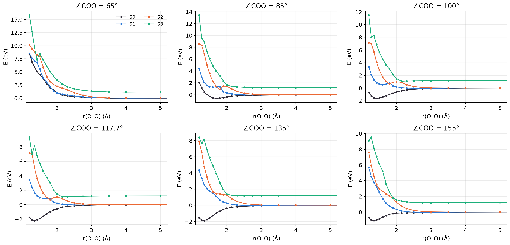
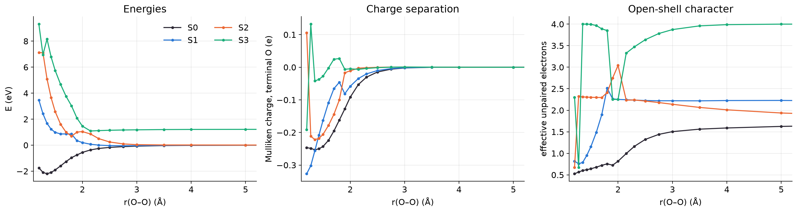
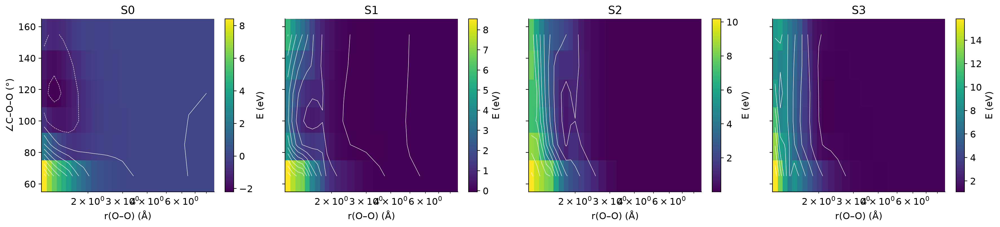
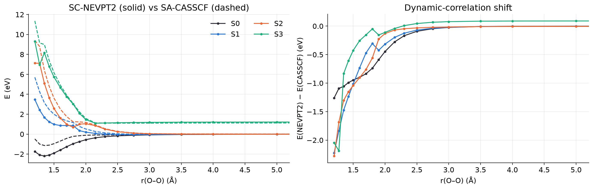
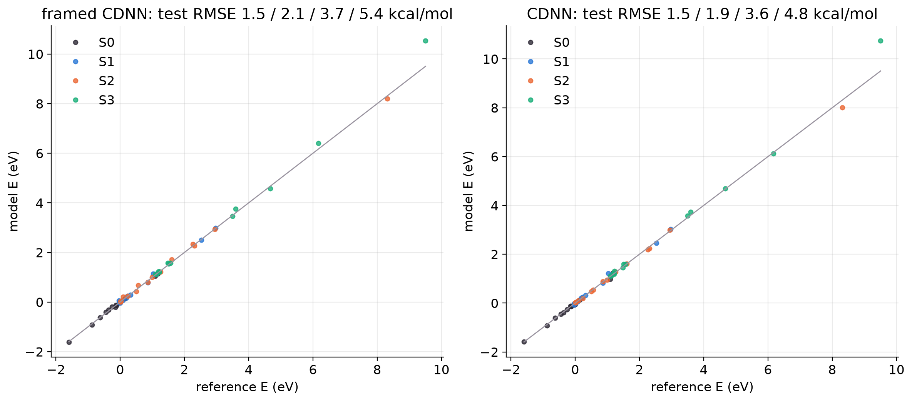
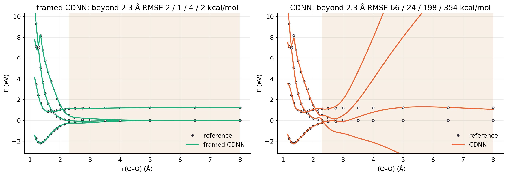
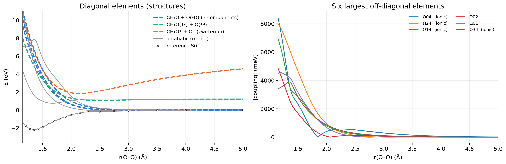
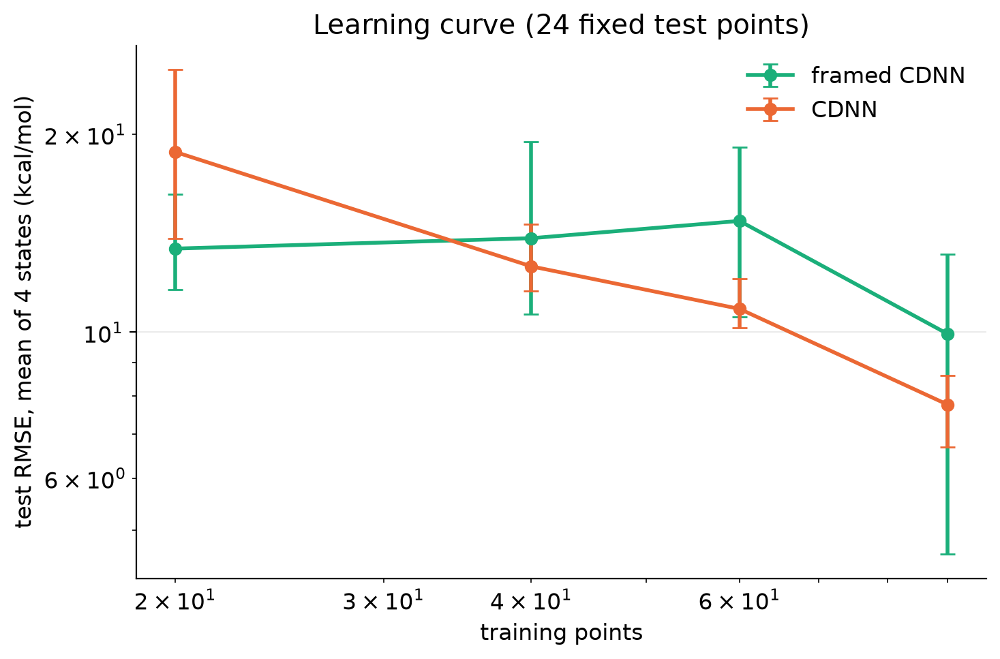

Tables
T1. Reference data
| quantity | value |
|---|---|
| method | SA4-CASSCF(8,6)/cc-pvdz + SC-NEVPT2 |
| energies used for training | nevpt2 |
| geometries | 120 |
| coordinates | r_OO 1.2–8, a_COO 65–155 |
| fixed | r_CH = 1.08, a_HCO = 120, r_CO = 1.272 |
| converged | 120 / 120 |
| consistent active space | 120 / 120 |
| O(¹D) components at largest r_OO: spread (meV) | 6.5 |
| S3 asymptote (eV) | 1.218 |
| mean time per geometry (s) | 1.6 |
| total compute (h) | 0.05 |
| largest CASCI vs SA-CASSCF energy difference before NEVPT2 (µEh) | 6822.45 |
| S0 well depth along the cut (eV) | 2.198 |
| S0 minimum at r_OO (Å) | 1.350 |
tables/T1_reference_summary.csv
T2. Ladder anchors for the ion-pair structure (frame uses: experiment)
| quantity | experiment | computed (aug-cc-pvtz) |
|---|---|---|
| IE(CH₂O) (eV) | 10.880 (adiabatic) | 10.956 (vertical) |
| EA(O) (eV) | 1.461 | 1.336 |
| O ¹D – ³P (eV) | 1.967 | 1.967 (experiment) |
| ΔE(ion pair) = IE − EA − ΔE(¹D) (eV) | 7.452 | 7.653 |
| Coulomb crossing r* = 14.40 / ΔE (Å) | 1.93 | 1.88 |
tables/T2_ladder.csv
T3. RMSE (kcal/mol), mean ± s.d. over seeds
| test | model | S0 | S1 | S2 | S3 | seeds |
|---|---|---|---|---|---|---|
| random split: test | framed CDNN | 1.49 ± 1.19 | 2.13 ± 1.07 | 3.74 ± 2.71 | 5.39 ± 2.62 | 3 |
| random split: test | CDNN | 1.53 ± 0.95 | 1.93 ± 1.12 | 3.56 ± 1.79 | 4.82 ± 2.39 | 3 |
| trained r ≤ 2.3 Å: validation | framed CDNN | 2.10 ± 0.81 | 2.40 ± 0.34 | 4.36 ± 1.41 | 6.36 ± 3.27 | 3 |
| trained r ≤ 2.3 Å: validation | CDNN | 1.56 ± 0.59 | 2.97 ± 1.35 | 3.49 ± 0.69 | 8.19 ± 5.53 | 3 |
| trained r ≤ 2.3 Å: beyond 2.3 Å | framed CDNN | 1.84 ± 0.67 | 1.36 ± 0.25 | 3.98 ± 0.75 | 1.51 ± 0.22 | 3 |
| trained r ≤ 2.3 Å: beyond 2.3 Å | CDNN | 65.77 ± 22.26 | 24.44 ± 3.48 | 197.72 ± 61.38 | 354.07 ± 43.11 | 3 |
tables/T3_model_errors.csv
T4. Learning curve, test RMSE (kcal/mol) on 24 fixed points
| n train | model | mean RMSE | S0 | S1 | S2 | S3 |
|---|---|---|---|---|---|---|
| 20 | framed CDNN | 13.40 ± 2.01 | 23.85 | 11.35 | 11.27 | 7.12 |
| 40 | framed CDNN | 13.90 ± 3.97 | 19.35 | 11.52 | 10.79 | 13.92 |
| 60 | framed CDNN | 14.76 ± 3.50 | 20.34 | 15.60 | 14.73 | 8.37 |
| 90 | framed CDNN | 9.94 ± 3.80 | 21.14 | 5.29 | 6.90 | 6.43 |
| 20 | CDNN | 18.79 ± 4.67 | 23.60 | 13.27 | 15.00 | 23.30 |
| 40 | CDNN | 12.59 ± 1.41 | 16.03 | 11.08 | 9.81 | 13.45 |
| 60 | CDNN | 10.85 ± 0.86 | 9.02 | 7.68 | 9.17 | 17.53 |
| 90 | CDNN | 7.76 ± 0.79 | 10.42 | 2.22 | 4.81 | 13.59 |
tables/T4_learning_curve.csv
T6. Dynamic correlation along the equilibrium cut (each level zeroed at its own asymptote)
| state (near r_OO = 1.35 Å) | SA-CASSCF (eV) | SC-NEVPT2 (eV) | shift (eV) |
|---|---|---|---|
| S0 | -1.141 | -2.198 | -1.057 |
| S1 | 3.147 | 1.675 | -1.472 |
| S2 | 6.392 | 5.092 | -1.301 |
| S3 | 8.995 | 8.162 | -0.832 |
| S0 well depth | 1.141 | 2.198 | 1.057 |
tables/T6_dynamic_correlation.csv
Figures








Configuration
# Step 1: dynamic correlation. SA4-CASSCF(8,6) + SC-NEVPT2 with cc-pVDZ on the planar 2D grid (120 points). [run] name = "nevpt2_2d" description = "SA4-CASSCF(8,6)/cc-pVDZ + SC-NEVPT2, planar (r_OO, angle COO)" threads = 6 # PySCF and PyTorch threads; use the number of performance cores [refs] source = "compute" basis = "cc-pvdz" ncas = 6 # active space: C-O-O pi (3), O-O sigma/sigma*, terminal-O in-plane lone pair nelecas = 8 nroots = 4 # singlet A' states averaged with equal weights spin = "singlet" dynamic = "nevpt2" # none | nevpt2 (state-specific SC-NEVPT2 on the SA-CASSCF orbitals) energy = "nevpt2" # which energies the models learn max_cycle = 100 [refs.grid] # one list per coordinate; a single value holds that coordinate fixed r_OO = [1.20, 1.275, 1.35, 1.425, 1.50, 1.60, 1.70, 1.80, 1.90, 2.00, 2.15, 2.30, 2.50, 2.75, 3.00, 3.50, 4.00, 5.00, 6.50, 8.00] a_COO = [65.0, 85.0, 100.0, 117.7, 135.0, 155.0] r_CO = [1.272] [ladder] compute = true # delta-CCSD(T) IE(CH2O) and EA(O); about 10-30 min basis = "aug-cc-pvtz" use = "experiment" # experiment | computed: which ion-pair asymptote the frame uses [frame] zeta_env = 1.0 # overlap envelope exponent (1/bohr): how fast learned corrections die off with r_OO r_ref = 1.35 # envelope = 1 at this O-O distance (Angstrom) feature_zetas = [0.6, 1.0, 1.6] [train] models = ["framed", "cdnn"] # framed = ChannelFrame + small networks; cdnn = plain CDNN (Shu et al. 2025) exclude_flagged = true # skip unconverged points and points whose active space changed character hidden_framed = [128, 64] hidden_cdnn = [128, 64] coupling_init = 0.1 # eV; framed couplings must not start at exactly 0 (their energy gradient vanishes there) lr_framed = 2e-3 lr_cdnn = 1e-3 alpha2 = 1e-6 # L2 weight penalty (eq. 5 of the CDNN paper) epochs = 6000 restarts = 2 seeds = [0, 1, 2] [train.random_split] # interpolation test: random train / validation / test split of all usable points enabled = true train_fraction = 0.75 val_fraction = 0.125 [train.extrapolation] # train only on r_OO <= r_train_max, test beyond it enabled = true r_train_max = 2.3 [train.learning_curve] # test error vs number of training points (fixed test set) enabled = true n_train = [20, 40, 60, 90] test_fraction = 0.2 [train.restraint] # diabatic restraint: ground-state weight of the ionic structure follows the CASSCF charge enabled = false weights = [0.0, 0.1, 1.0, 10.0] q_ref = -0.6 # terminal-O Mulliken charge taken to mean "fully zwitterionic" (an assumption: vary it) min_gap_eV = 0.1 # apply only where S1 - S0 exceeds this (eigenvector derivatives blow up at degeneracies)